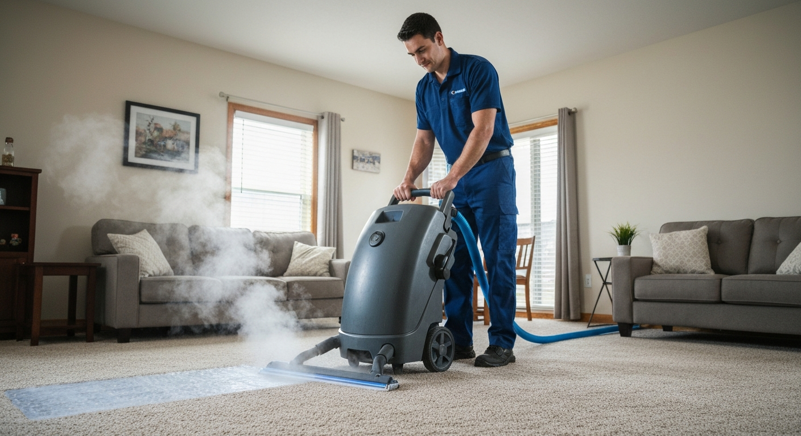
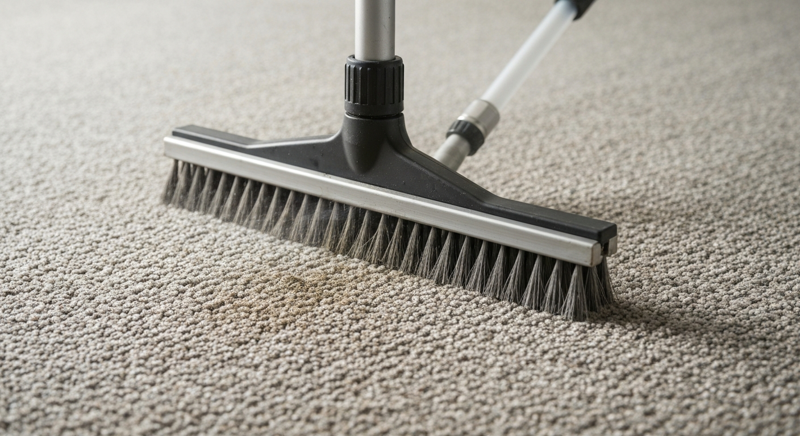
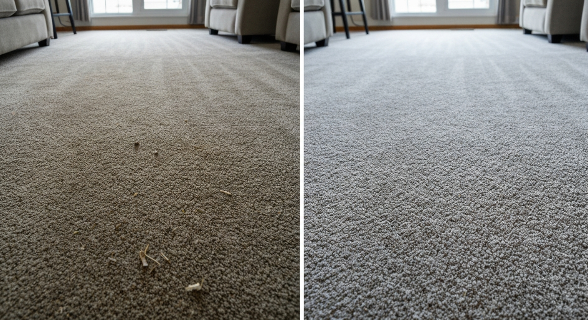
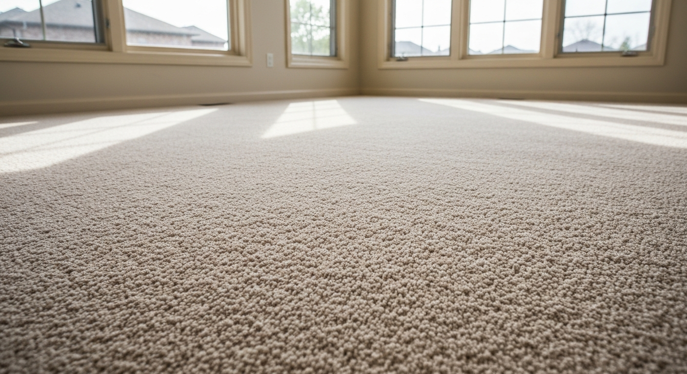

Hot water extraction carpet cleaning for Guelph homes. Pet stains, odours, and deep cleaning done right.
Truck-mounted steam cleaning — the most effective method for deep cleaning carpet fibres and removing allergens.
Enzyme treatment for pet urine that eliminates odour at the source rather than masking it.
Sofas, armchairs, and fabric dining chairs cleaned and refreshed using fabric-safe methods.
In-home area rug cleaning for most rug types — wool, synthetic, and blended fibres.
Targeted stain pre-treatment for wine, coffee, food, and other specific stains before the main clean.
Office, retail, and commercial carpet cleaning — scheduled maintenance programs available.




Truck-mounted hot water extraction — more powerful than portable units
Carpets typically dry in 4–8 hours — not 24+ like cheap methods
Enzyme treatments that truly eliminate pet odour, not just mask it
Guelph-based carpet cleaners — not a franchise with rotating technicians
Carpets act as air filters in your home, trapping dust, allergens, pet dander, and soil particles in their fibres. This is actually a benefit — it keeps those particles out of the air you breathe — but only until the carpet's capacity is exceeded. At that point, foot traffic grinds trapped particles into the fibre, accelerating wear, and any disturbance releases them back into the air. Professional cleaning every 12–18 months is the standard recommendation for maintained carpet in a Guelph home with normal use.
Hot water extraction (often called steam cleaning) is the method recommended by carpet manufacturers and the Carpet and Rug Institute. A truck-mounted unit heats water to 200°F and injects it under pressure into the carpet pile while simultaneously extracting the water along with dislodged soil, cleaning solution, and residues. Truck-mounted units generate significantly more suction than portable machines, resulting in faster drying times (4–8 hours vs. 24+ hours) and better soil removal.
Pet urine is the most common difficult stain call we receive from Guelph pet owners. Standard carpet cleaning removes the surface stain and visual evidence, but pet urine crystals deposit below the carpet backing and into the underpad, where they rehydrate with humidity and release odour. Effective pet odour treatment requires enzyme-based cleaners applied to penetrate all affected layers, allowed to dwell, and then extracted. We assess the extent of contamination — including whether the underpad needs replacement — at the time of booking.
Carpet protector (Scotchgard or equivalent) applied after cleaning adds a hydrophobic barrier that repels liquid spills before they bond with fibres, giving you time to blot before a stain sets. It's particularly worth considering in dining rooms, children's rooms, and high-traffic hallways.
Upholstery cleaning is often overlooked. Sofas and armchairs accumulate the same skin cells, pet dander, and spills as carpet but are cleaned far less frequently. We use fabric-specific cleaning methods that won't damage delicate upholstery.
We serve Guelph, Fergus, Elora, Rockwood, Cambridge, and all of Wellington County.
We provide carpet cleaning services throughout Guelph and the surrounding region:
Professional carpet cleaning in Guelph typically runs $120–$200 for a standard bedroom, $180–$280 for a living room, and $350–$600 for a full main floor. Most companies price by room or by square foot. We provide fixed quotes before starting, with no add-on charges for pre-treatment or moving standard furniture.
With truck-mounted hot water extraction, carpets typically dry in 4–8 hours. Opening windows, running fans, and increasing air circulation speeds drying. Avoid walking on wet carpet in outdoor shoes, and keep pets off until fully dry.
Every 12–18 months for most households. Homes with children, pets, or high foot traffic benefit from annual cleaning. Carpet manufacturers often require professional cleaning every 18 months to maintain warranty validity.
We can remove or significantly reduce pet odour in most cases using enzyme-based treatments. The success depends on how deep the contamination has penetrated. If urine has soaked through to the underpad and subfloor, those materials may need replacement — we assess this honestly at the booking stage.
Hot water extraction ('steam cleaning') is the most thorough method and the one recommended by carpet manufacturers. Dry cleaning uses low-moisture methods that clean the surface more quickly but leave more residue in the fibre. For deep cleaning and allergen removal, hot water extraction is superior.
We clean area rugs in-home for most rug types including synthetic, wool-blend, and polypropylene. Very delicate or antique Oriental rugs are better cleaned in a specialized rug cleaning plant — we advise on which approach is appropriate for your rug.
Contact us today for a free, no-obligation quote for carpet cleaning services in Guelph.